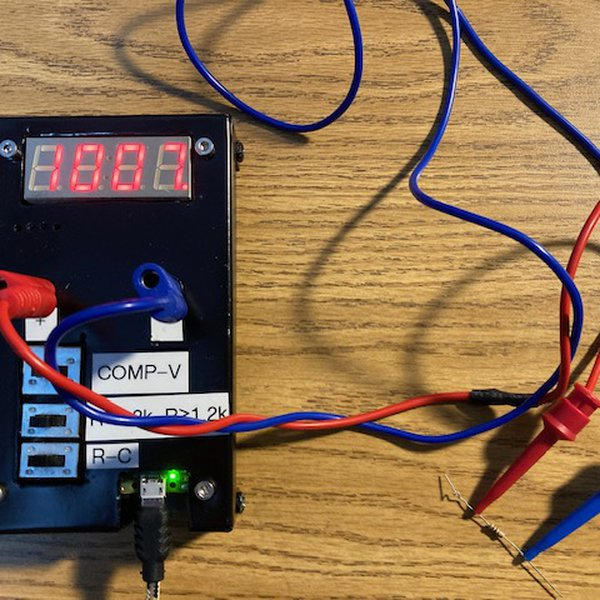
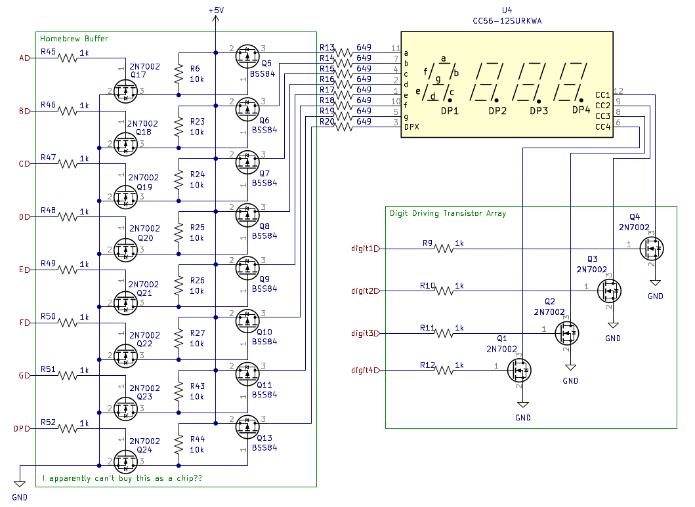
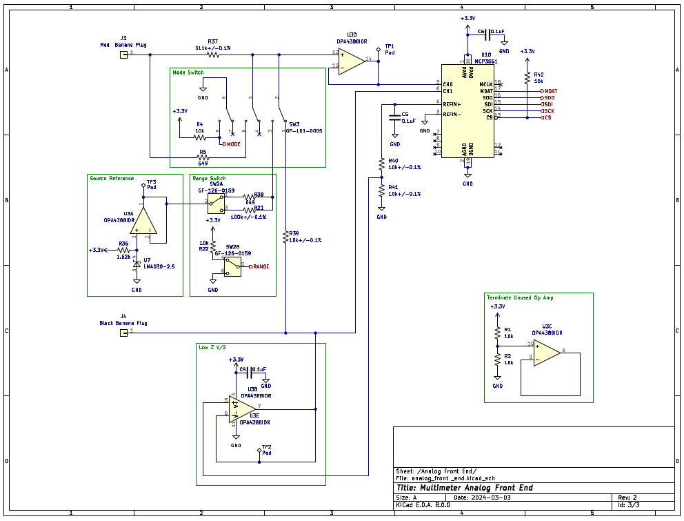
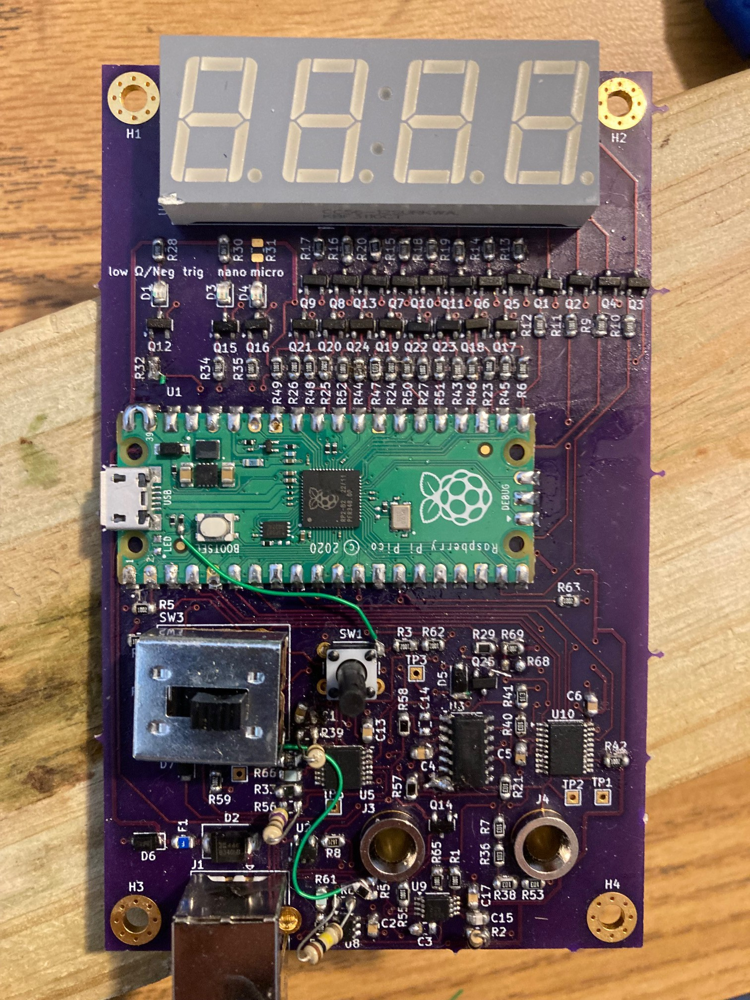
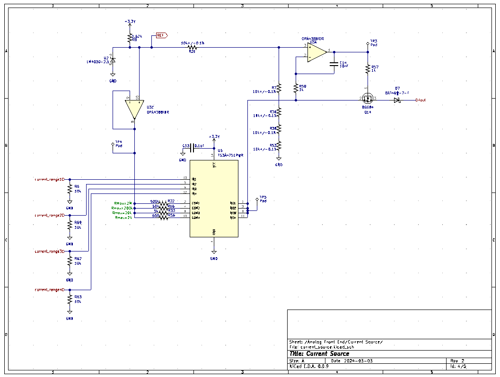
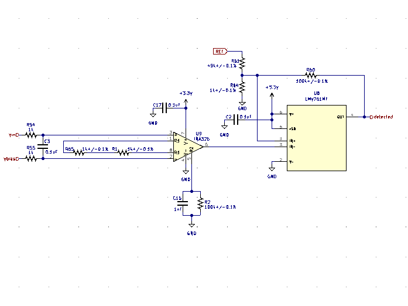
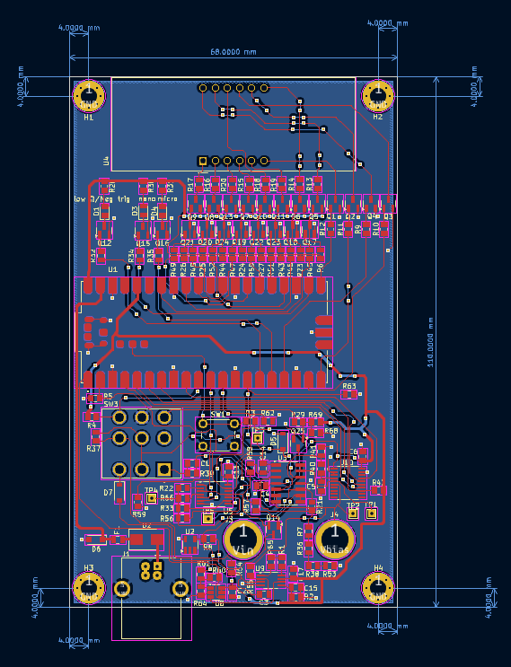
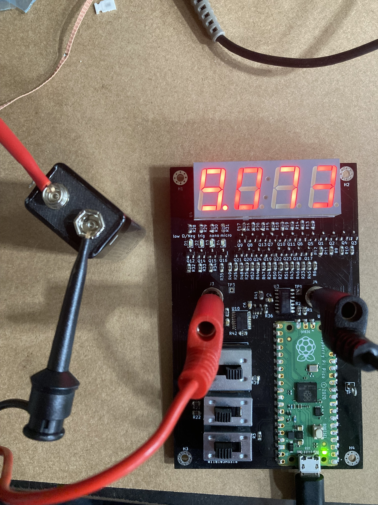
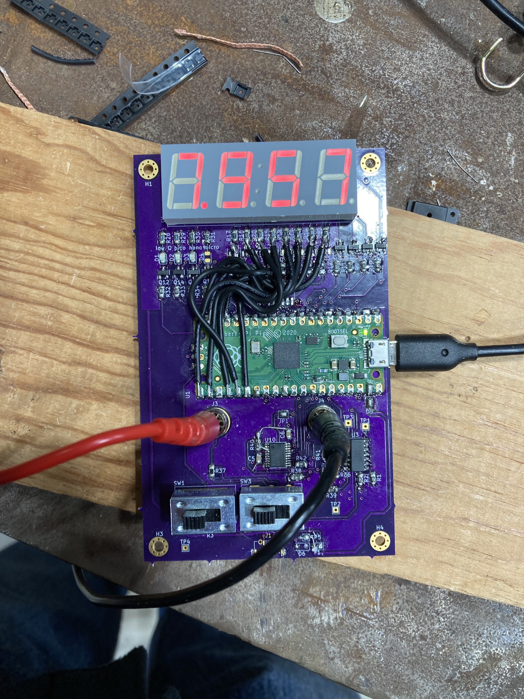

The multimeter is controlled by a Raspberry Pi Pico. This Pico reads digitized data from the front end, computes the voltage, resistance, or capacitance value, and drives the led display to display the value.
For some reason I could not find a chip that would just drive a 4 digit seven segment display that I could easily purchase. Maybe I didn't look hard enough, or maybe it doesn't exist. Instead I basically made discrete IO pin buffers from p-channel and n-channel mosfets.

There are also four regular LEDs that indicate things like unit prefix and sign. These are not shown but can be found in the full schematic.
The analog front end conditions voltage readings that are read by the MCP3561 ADC. The conditioning circuit is selected by the various switches. When SW3 is in its default position, the meter is in voltage measurement mode. Switching it changes to component measurement mode. Changing between resistance and capacitance in component mode is facilitated by a logic switch wired up to the Pico (Not Shown). The range switch changes the range in component measurement mode.

Voltage Measurement
As can be observed, voltage measurement mode is a buffered voltage divider into the ADC. Another buffer floats this division at half the ADC reference voltage to allow for negative voltage reading. This floating of the measurement circuit is still there in component measurement mode, which is probably detrimental to performance.
Resistance Measurement
In component measurement mode, voltage is sourced by buffered 2.5V LM4030 voltage reference in series with the range resistor. There is also another resistor between the measurement node and the input terminal to provide some protection to the device. The combination of these resistors in series, and the resistance being measured creates a voltage divider and resulting voltage that is read by the ADC. The measurement resistance is then calculated in firmware using the known resistances and measured voltage.
Capacitance Measurement
Capacitance measurement is the same as resistance measurement except capacitance. This basically means that instead of measuring a static voltage, the voltage is constantly monitored for a dip that indicates a capacitor was connected. The resulting exponential rise is then sampled, and using the points from this sampling, the capacitance is found. All this computation is obviously done using the Pico. There is a trigger indicator to alert the user that they have triggered on a capacitance.
The most lacking part of the design is probably the resistance measurement which only achieves 10% relative accuracy. The biggest issue with the resistance measurement is that it is using a ratio (series resistor) instead of a current source. This becomes a problem when the series resistor is very big compared to the resistance being measured. Additionally, the added series resistor in the network (Between the measurement resistor and the voltage reference series resistor) complicates the measurement algorithm and circuit.
REV3 is coming along well. I have fixed most of the problems, and it is nearly ready for a final test after the new enclosure is completed.
One of the most annoying things about REV2 was flicker in the display. Most of the time it was just a few counts of the least significant digit, so not consequential for reading accuracy, but it was annoying and looked amateurish.
It turns out it was mostly a firmware/algorithm improvement that fixes this. Hardware filtering before the ADC definitely matters, but what really made the display look good was using an update customized IIR filter instead of just a windowed running average, and adding some hysteresis between real measurement and what was displayed. I considered adding hysteresis a while back, but I ended up not doing it because I couldn't find any evidence that it is used in commercial meters. After further study, I think it is likely that it is implemented to some extent, but just not documented. It is obviously common practice with single bit analog to digital (comparators), and I just don't see how commercial meters can keep as steady as they do without it. I only added a little over a count, so a little over 1mV of hysteresis in voltage mode.
The prototype for REV3 has been constructed.

Unfortunately, there seem to small memory effects with the voltage reading after increasing the input impedance to 5.21M ohm in this revision. I'm going to attempt to create an auto zero circuit to compensate for this. In addition, there are a routing issues, and additional IO is really needed, as in this revision the LED pin on the pico board is used.
After using REV2 as basically my daily driver for over a year, I decided it was time to make another revision to take care of some of the problems that are present in the REV2 design. REV3 has not yet been fabricated yet, but here is an overview of the changes.
Better Resistance Measurement Circuit
REV2 basically just utilized a voltage divider for resistance measurement. This approach is not ideal because the ADC codes per ohm is not constant. Also there was only two resistance ranges. The combination of these factors meant that the dynamic range of resistance measurement was not very high - only about 30Ω to 500kΩ, and the accuracy could be as bad as 10% at resistances near the limit of a range. To fix these problems I have implemented a constant current source to measure the resistance in REV3.

Additionally there are 4 current ranges: 1mA, 100uA, 10uA, and 1uA.
No More Capacitance Mode
I have done a second calibration on both the full featured multimeter version, and the voltmeter version after ~1 year. No adjustments were needed. I have backed off the voltage spec to 0.5% relative accuracy. Both versions showed slightly higher error when measuring 1V compared to the first time I calibrated them. This leads to a large decrease in accuracy. 1V is low in the voltage range, so small differences lead to large errors.
I have completed the final calibration for the second revision. The data is as follows:
Voltage: Meter, Fluke 101 -60.28, -60.4 -54.70, -54.81 -49.86, -49.90 -44.88, -44.97 -39.86, -39.93 -34.93, -35.00 -29.89, -29.94 -24.90, -24.94 -19.92, -19.95 -14.94, -14.96 -9.956, -9.97 -4.972, -4.978 -0.987, -0.989 0.001, 0.000 0.989, 0.989 4.975, 4.984 9.960, 9.97 14.94, 14.97 19.92, 19.96 24.90, 24.95 29.89, 29.95 34.81, 34.87 40.00, 40.08 44.80, 44.88 49.90, 50.03 54.97, 55.11 61.04, 61.1 Resistance: Meter, Range, Fluke 101 29.57, 1, 31.7, 98.33, 1, 103.3 332.3, 1, 332.8 1081, 1, 1044 10730, 2, 10520 21930, 2, 21410 100500, 2, 97300 339800, 2, 315200 530000, 2, 484000 Capacitance: Meter, Range, Fluke 101 50.88n, 2, 49.2n 96.73n, 2, 96.6n 1.006u, 2, 1.009u 10.03u, 1, 9.92u 45.57u, 1, 47.32u
This works out to 0.3% relative accuracy for voltage, 10% for resistance, and 5% for capacitance.

I have assembled and brought up the revision 2 PCB to the point where it reads voltage. Additional firmware is needed for mode switching and calibration is also needed.
I have mounted the first revision into an aluminum sheet metal enclosure with some holes cut in it. The first revision has been repurposed into just a voltmeter because there are some problems with the switching circuit.
I did another test with the rev1 prototype, this time only measuring voltage, and bringing it all the way to the maximum voltage of 60V. Again I am doing calibration and comparison to my Fluke 101 Multimeter. This has a problem as the Fluke 101 does not have more digits than this multimeter, however, I am ignoring this for now. I was able to stay under 1% error for all measurements, and I think this could be improved with a better calibration procedure. Here are the results:
Voltage(V), Error(%) 0.989, 0.0 4.982, 0.71 9.97, 0.76 14.96, 0.81 19.95, 0.86 24.94, 0.85 29.94, 0.88 34.99, 0.86 40.03, 0.83 44.9, 0.81 49.89, 0.85 54.84, 0.9 59.8, 0.71
To make the display work on revision 1, I bypassed the display driver and wired the pico IO pins strait to the segment LEDs. It is a little faint, as the display driver circuit worked completely differently, but it works to test the display.

As the title says, this is a preliminary test of the first version of the multimeter. Before the test, I basically calibrated it using my Fluke 101 as a reference. The results of the test are as follows:
2.5V Error: 0.569, Coeff of Var: 0.0102 5V Error: 0.2342, Coeff of Var: 0.001 7.5V Error: 0.2404, Coeff of Var: 0.0019 10V Error: 0.0671, Coeff of Var: 0.0006 10ohm Error: 48.5352, Coeff of Var: 0.0 100ohm Error: 8.2285, Coeff of Var: 0.0 1000ohm Error: 0.0443, Coeff of Var: 0.0 10000ohm Error: 1.9391, Coeff of Var: 0.0 40000ohm Error: 5.2247, Coeff of Var: 0.1246
As can be observed, the error is fairly low for all the tested voltages. For resistance, the error is higher especially at the low and high ends. It basically isn't accurate at all at 10 ohms. I also did a test of capacitance and for 100nF it measured 579nF, so basically order
of magnitude. For 10uF it measured 11.78uF, so close. I may be able to make capacitance better (for 100nF) by increasing the sample rate.